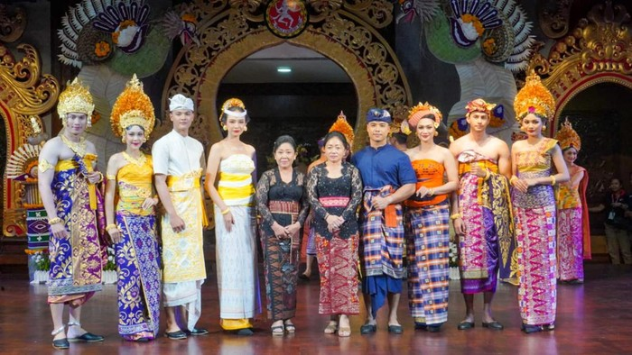

PAKAIAN ADAT BALI

1. Suku Bali
Suku Bali adalah suku bangsa mayoritas yang menghuni Pulau Bali.
Mereka berkomunikasi menggunakan bahasa Bali dan mengikuti budaya Bali.
Sebagian besar suku Bali merupakan penganut agama Hindu, sedangkan
sisanya beragama Islam, Kristen dan Buddha.
2. Suku Bali Aga
Suku Bali Aga adalah salah satu subsuku bangsa Bali yang menganggap
mereka sebagai penduduk Bali yang asli.
Suku Bali Aga disebut dengan Bali pegunungan yang mana sejumlah dari
mereka mendiami Desa Trunyan.
Istilah Bali Aga memiliki konotasi sebagai masyarakat yang berada di daerah
pegunungan atau kawasan pedalaman dan belum terjamah oleh teknologi.
Hal ini karena masyarakat Bali Aga juga dikenal hidup terisolasi di daerah
pegunungan yang terikat pada adat istiadat setempat dan ritual-ritual tradisional.
3. Suku Nyama Selam
Suku Nyama Selam juga menjadi salah satu suku asli yang mendiami Pulau
Bali.
Nama Suku Nyama Selam berasal dari istilah "Nnyama" yang bermakna
'saudara' dan "Selam" yang berarti 'Islam'.
Meskipun Suku Nyama Selam memeluk agama Islam, namun mereka juga
menjalani tradisi kebudayaan Bali di kehidupan sehari-hari.
Salah satu keunikan Suku Nyama Selam adalah tradisi
Ngejot, yaitu tradisi saling membantu dan berbagi makanan ketika hari raya.
4. Suku Bali Majapahit
Suku Bali Majapahit adalah suku asli yang mendiami Pulau Bali yang berasal
dari pendatang Jawa yang tinggal di Bali.
Kedatangan mereka dipengaruhi oleh budaya Majapahit yang bertujuan
mempersatukan masyarakat Majapahit di Bali.
Masyarakat Suku Bali Majapahit menganut agama Hindu serta menghuni
wilayah dataran rendah dan memiliki mata pencaharian bercocok tanam.
5. Suku Sasak
Meski Suku Sasak merupakan suku bangsa yang mendiami pulau Lombok,
namun beberapa kelompok Suku Sasak juga mendiami Pulau Bali.
Dalam kesehariannya, Suku Sasak berkomunikasi dengan menggunakan
bahasa Sasak.
Sebagian besar suku Sasak diketahui menganut agama Islam, dengan
sebagian kecil masih menganut kepercayaan pra-Islam yang disebut dengan
nama "Sasak Boda”.
Selain kelima suku tersebut, masih ada masyarakat dari Suku Melayu, Suku
Jawa, Suku Madura, Suku Batak, dan berbagai suku lain di Indonesia yang juga
menghuni Pulau Bali.
|